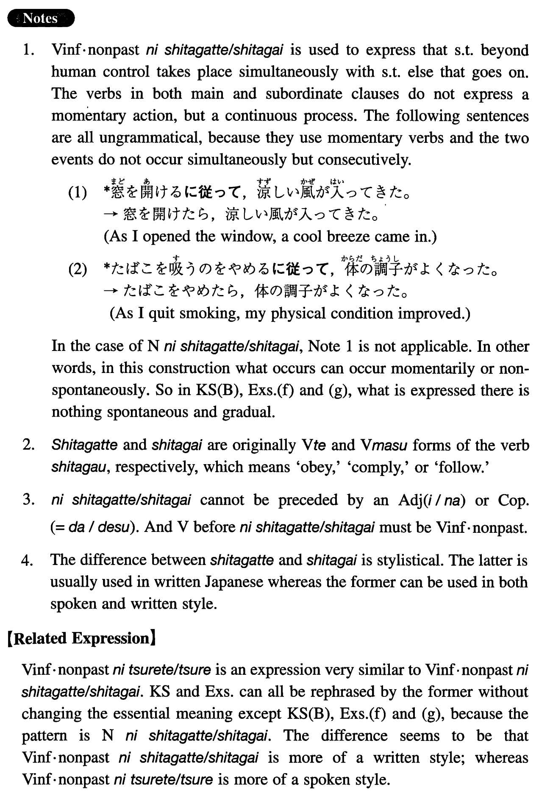

←
DoJG
→
に従って/従い
(I. 268)
Example sentences
(ksa).
日本の経済力が強くなる
に
{従って/従い}
、日本語学習者が増えてきた。
As Japan's economic power has become stronger, Japanese language learners have increased, accordingly.
(ksb).
契約
に
{従って/従い}
雇用期間を三年とする。
In accordance with the contract, your tenure shall be three years.
(a).
収入が増える
に従って
、支出も増える。
As our income increases, our expenditure, too, increases.
(b).
年を取る
に従い
、体力が衰える。
As you grow older, your physical strength declines.
(c).
文明が進む
に従い
、人間のストレスが多くなる。
As civilization progresses, human stresses increase.
(d).
日がたつ
に従って
、父の病気は回復してきた。
As the days went by, my father recovered from his illness.
(e).
太陽が沈んで行く
に従って
、温度がどんどん下がった。
As the sun went down, the temperature went down rapidly.
(f).
約束
に従い
、借金を一か月後に返した。
In accordance with the promise I returned the loaned money after a month.
(g).
社長の命令
に従って
、彼はただちにマニラに飛んだ。
In accordance with the president's order, he flew to Manila immediately.
Formation
(i)
Vinformal nonpast
に
{
従って
/
従い
}
その本を読む
に
{
従って
/
従い
}
As someone reads the book
(ii)
Noun
に
{
従って
/
従い
}
指示
に
{
従って
/
従い
}
In accordance with the instructions
